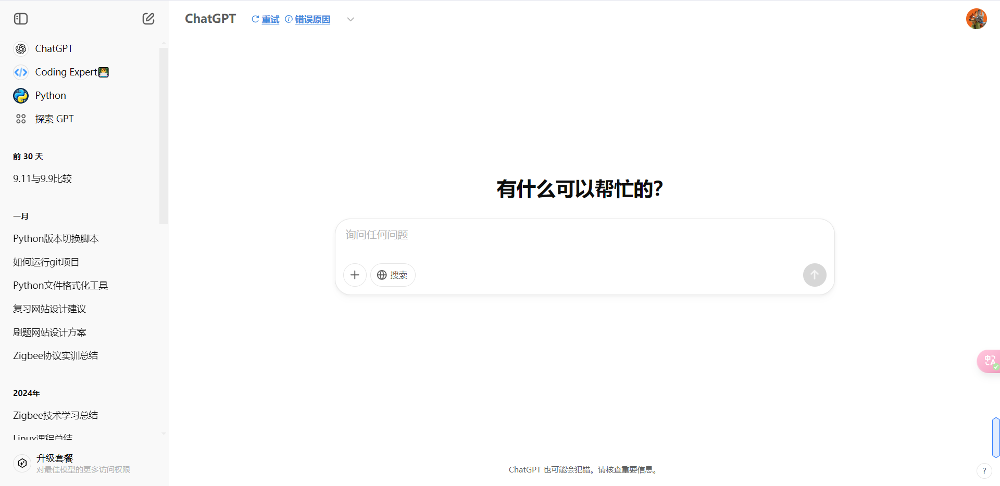

作者：Redusk ｜ 发布日期：2025年2月
✘ 错误示范
"帮我写个程序"
✓ 正确示范
"用Python编写爬虫脚本，提取豆瓣Top250电影的中英文名、评分和短评链接，数据保存为CSV格式"
| Cursor/DeepSeek | 代码级追问："第32行出现维度错误，输入shape=(None,256,256,3)，目标shape应如何计算？" |
| Kimi/豆包 | 文档处理："将50页PDF中的临床试验数据按实验组/对照组分类制成对比表格" |
"设计医疗问诊系统时，如何处理HIPAA合规要求（无需透露具体患者数据）"